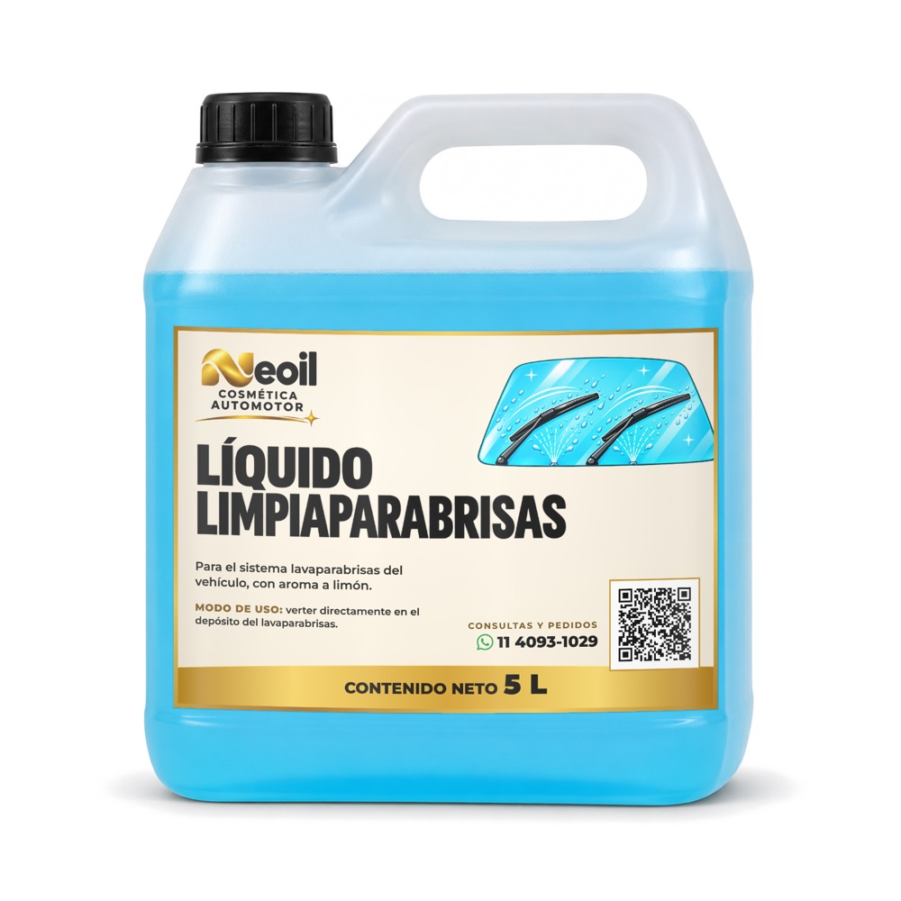

Sistema lavaparabrisas
Líquido limpiaparabrisas.
Para el sistema lavaparabrisas del vehículo, con aroma a limón.
Contenido neto: 5 L
Consultar por WhatsApp
Presentación.

Para qué sirve.
- Cargar el depósito del lavaparabrisas.
- Ayudar a limpiar el parabrisas al accionar las escobillas.
- Tener reserva en casa o en el taller.
Cómo se usa.
- Abrí el capó y ubicá el depósito del lavaparabrisas.
- Verté directamente en el depósito.
- Cerrá la tapa y accioná el lavaparabrisas.